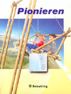
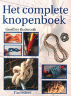

Technieken
Tweede Klas: De Vleermuis
Om je Tweede Klas proeven af te leggen bij De Vleermuis moet je bepaalde scoutstechnieken vlot kunnen toepassen (zoals sjorren, oriënteren, ...) De nodige ervaring kan je opdoen tijdens de vergaderingen. We hebben voor jou alle puntjes nog eens op een rijtje gezet: zorg dat je ze kent!
- Tweede klas vereisten van de Vleermuis (online lezen)
- Tweede klas vereisten van de Vleermuis (PDF document)
Technieken
Hieronder kan je sommige van de Tweede Klas vereisten eens op je gemak nalezen. Voor wie zijn honger niet gestild krijgt hebben we onderaan twee interessante boeken besproken met een heleboel interessante technieken.
- achtknoop
- ashley's stopper
- dubbele achtknoop
- gekregen achtknoop
- mastworp
- paalsteek
- paalsteek in de bocht
- platte knoop
- prussikknoop
- schootsteek
- timmermanssteek
- verkortingsknoop of trompetsteek
- dubbele zoeteliefjes
Interessante lectuur
 |
Gerritse Garry, e.a.; [ill. Lindeboom J.], Pionieren, Dit boekje is specifiek voor scouting bedoeld. Zo staan alle sjortechnieken (en dat zijn er meer dan twee!) duidelijk uitgelegd en je leert de belangrijkste knopen voor het scoutsgebeuren kennen. Er staan blauwdrukken in van heel wat uitdagende constructies voor kampen. Dit is een schat aan informatie voor iedereen die graag de handen uit de mouwen steekt!
|
 |
Budworth Geoffrey; Het Complete Knopenboek, Dit is een prachtig werk! Als je beslist om slechts één boek over knopen aan te schaffen, koop dan dit. Alle belangrijke knopen worden er in uitgelegd inclusief een paar heel bijzondere (zoals de handige potlus). Bovendien is alles in een verschrikkelijk lekkere lay-out gegoten wat het knopen er nog aangenamer op maakt. |